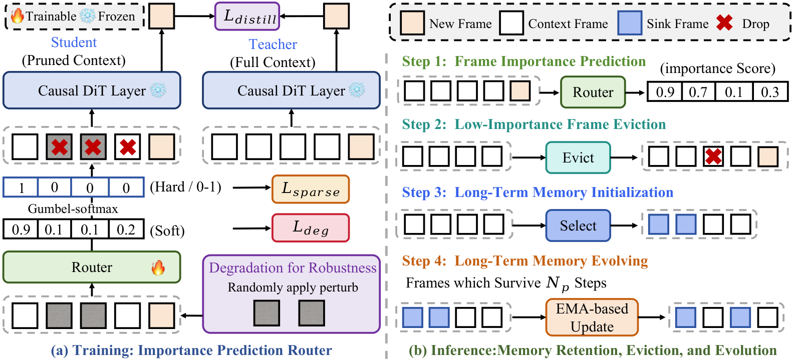

An artist drawing a very long comic strip can pin only a few earlier panels to the desk. Always keeping the first panels fails once the story moves on, and always keeping the latest panels keeps their mistakes in view. L2M learns which panels are worth pinning, and swaps in a newer, clean panel when the scene changes.
아주 긴 만화를 그리는 작가는 앞선 칸 중 몇 개만 책상에 핀으로 꽂아 둘 수 있다. 늘 첫 칸들만 꽂아 두면 이야기가 바뀐 뒤 쓸모가 없고, 늘 최근 칸들만 꽂아 두면 그 칸의 실수까지 계속 보게 된다. L2M은 어떤 칸을 꽂아 둘 가치가 있는지 배우고, 장면이 바뀌면 더 새롭고 깨끗한 칸으로 바꿔 꽂는다.
How it works: a learned score replaces fixed eviction rules작동 방식은 고정 규칙 대신 학습된 점수
One learned score per cached frame decides both what gets dropped and what becomes long-term memory; the video model itself stays frozen.
캐시 프레임마다 매긴 학습 점수 하나가 무엇을 버리고 무엇을 장기 기억으로 남길지 함께 정한다. 비디오 모델 자체는 고정된 채로 둔다.

- Score frames.프레임 점수 매기기.The router compares the current chunk with each cached frame; a student on the pruned cache is pushed to match a teacher on the full cache, plus a sparsity loss.라우터가 현재 청크와 캐시의 각 프레임을 비교한다. 줄인 캐시를 보는 학생이 전체 캐시를 보는 교사를 따라가도록 학습하고, 희소성 손실을 더한다.
- Train on damaged history.손상된 기록으로 학습.20% of past frames get noise so the router learns to distrust degraded frames; positions are shifted to close the gaps eviction leaves.과거 프레임의 20%에 노이즈를 넣어 라우터가 손상된 프레임을 덜 믿게 한다. 내보낸 자리의 위치 간격은 위치 인코딩을 옮겨 메운다.
- Evolve memory.기억 갱신.Of a 21-frame budget, 14 frames are long-term memory; a frame that survives 6 steps can replace one of them by EMA score.21프레임 예산 중 14개가 장기 기억이다. 6스텝을 살아남은 프레임은 EMA 점수에 따라 그중 하나를 대신할 수 있다.
Key point: errors stop compounding핵심은 오류가 더 쌓이지 않는다는 것
Over a 30-second video, text–video agreement falls 3.49 points under oldest-first eviction but only 0.74 with L2M.
30초 영상에서 텍스트와 영상의 일치도는 오래된 것부터 버리는 방식에서 3.49점 떨어지지만, L2M에서는 0.74점만 떨어진다.
Results: the longer the video, the bigger the gain결과는 영상이 길수록 커지는 향상
Against its own Self Forcing base, L2M's quality gain grows steadily with the generation horizon, far beyond the 5-second training clips.
바탕 모델인 Self Forcing 대비 L2M의 품질 향상은 생성 길이가 늘수록 꾸준히 커지며, 5초짜리 학습 클립보다 훨씬 긴 구간까지 이어진다.
Against other long-video methods at 60 seconds, the margins are smaller but L2M leads on motion and consistency together.
60초에서 다른 장편 영상 방법들과 비교하면 차이는 작아지지만, L2M은 움직임과 일관성 모두에서 앞선다.
| Method | Dynamic | Subject cons. | Quality | Overall cons. |
|---|---|---|---|---|
| CausVid | 54.69 | 85.48 | 78.49 | 22.30 |
| Rolling Forcing | 35.94 | 86.74 | 77.66 | 23.01 |
| Self Forcing | 33.59 | 81.22 | 75.23 | 21.58 |
| Deep Forcing | 53.12 | 89.91 | 79.17 | 24.24 |
| L2M | 56.25 | 90.29 | 80.73 | 24.54 |
For long autoregressive video or world-model rollouts under a fixed KV budget, learn which frames to keep instead of relying on oldest-first eviction or fixed sinks. The router is cheap to train and also lifted LongLive without retraining its generator.고정된 KV 예산으로 긴 자기회귀 영상이나 월드 모델을 굴린다면, 오래된 것부터 버리거나 고정 기준 프레임에 기대지 말고 남길 프레임을 학습하자. 라우터는 학습 비용이 적고, 생성기를 다시 학습하지 않고도 LongLive의 성능을 올렸다.
Evidence is mostly VBench-Long and ViCLIP, the human study has only 10 raters, and degradations are hand-made noise. Temporal flickering is slightly worse than Self Forcing, and interactive, input-driven generation is left for future work.근거는 주로 VBench-Long과 ViCLIP이고, 사람 평가는 평가자 10명뿐이며, 손상은 직접 설계한 노이즈다. 시간적 깜빡임 점수는 Self Forcing보다 약간 나쁘고, 사용자 입력이 개입하는 상호작용형 생성은 향후 과제로 남겼다.